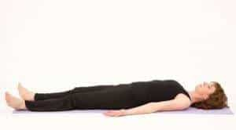
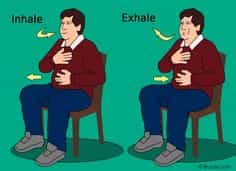
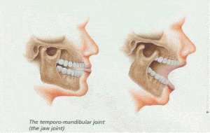

< < < Back
How To Improve The Impact Of Your Voice – Return Of Kings
A common thread that I weave through all of my articles is that physical training can, and should involve more than merely training the muscles to be bigger and stronger. Many aspects of your physical person can be trained, and you will likely know that if you read the writings of other people in this corner of the internet (including myself): mindset, situational awareness, meditation, et al.
One of the things that I rarely see discussed, is something that is of the utmost importance for anybody entering the business world, school, dating, or any other field where face-to-face interaction is a necessity: elocution
What Is Elocution?
Elocution is the study and practice of vocal delivery, in terms of voice, gesture, and pronunciation. Even in this day of the internet, there will come a time in your life where you have to speak publicly. More to the point of this website, there are few things that signal “beta male” more than a mumbling chump who looks down at the ground, doesn’t project, and is completely unintelligible to those that he is talking to.
There have been many books written on the topic, but the two that I used in my own elocution autodidacticism are Vocal Expression: Voice Training and Interpretation and Elocution Simplified, both of which date from the Gilded Age—like any proper physical training manual should—and can thus be found on Gutenberg (a resource I regularly use).
Before one even begins vocalizing, there are several steps you can do to improve your elocution right off the bat:
Non-Verbal Training
The first fix you can do in improving your vocal projection is to improve your posture—doing so will expand the chest, allowing greater movement of the diaphragm and lung capacity, which of course means greater capability of vocal projection and the ability to talk for longer periods without taking unseemly gasps for air.
As luck would have it, I’ve already written an extensive article on improving one’s posture, so there’s no need to be redundant. Just read that article, do its exercises, and get back here.

Once your posture has been fixed up, you can begin training yourself to breathe diaphragmatically. This is the proper way to breathe, filling your lungs up to their maximum capacity. You can tell that you’re doing it properly when you see your stomach expanding with each breath, rather than your chest. To put it another way, the chest and shoulder heaving that you do when consciously “taking a breath” is completely wrong.
The first way to train diaphragm breathing is to simply lie flat on your back and breathe as deep as you can. Do this for 5-10 minutes—don’t hyperventilate of course. Close your eyes and do them slow to get the feel of the diaphragm muscle flexing and relaxing. Feel your belly expanding with air. This is somewhat similar to the Maxick muscle control exercises that I have discussed in previous articles.

This exercise will also help you get to sleep—just do it as you lay in bed for 10 minutes or so. After you’ve mastered this exercise, stand up, and without flexing or tensing up, breath diaphragmatically. Place one hand right below the ribs and the other behind your back, and take deep breaths. Feel your stomach expanding under your hand.

Once you have mastered diaphragmatic breathing, you can begin training the mouth and tongue. Some of this training, too, can be done without actually making noise. More specifically, there are three exercises for this:
1) Drop the head until the chin rests on the breast, raise the head but not the jaw.
2) With “eyes devoid of intellect” and the mouth slack and open, shake the head until you feel the lower jaw, when the lower jaw hangs loosely from the head
3) Test your ability to surrender the jaw by placing your fingers in front of the ears at the conjunction of the jaws, open the mouth with the intention to say no and note how it feels. Then say no and “surrender” the jaw to the word, noting how it feels.
Just practice this for 5-10 minutes a day.

Reinforcing The Tone
This is opening up other facial cavities and allowing them to resonate like a bell.
Realize that “talking through the nose” is in fact NOT talking through the nose—the failure to use the nasal cavity as a resonator is what makes your voice sound “nasally.”
In fact, your entire face is a resonator.
Think of the sound IOOO. Think, almost say it, but don’t. Feel your nasal cavity expand, and then say it, let the sound run up into your noise and to your eye sockets and forehead. Then do it with a hmm, hmm until your mouth is forced open and say MMEEEE. Keep consistent tones!
Always think of tone as flooding the face, feel that flood, and then when possible hum and let it “Escape” rather than force it out. You will see resonance grow.
Training the Tongue and Lips
As with most things worth doing, training the tongue lips is simple yet tedious, and frankly will make you look like an idiot should you do these in the presence of another person. But it is essential to do if you want to speak properly.
Lip control can be done with saying ME repeatedly, letting the tone explode easily onto the lips.
The easiest tongue exercises are:
Step 1: Combine L with A with an umlaut over it and say LA. LA LA LA. LA LA LA. LA. LA
Step 2: Change the accent over the vowel and do that exercise with all the possible sounds of “A”
Step 3: Change the vowel, and then do all variations of all vowels with the letter L. (E I O U)
Step 4: Using the letter D, then T, then N put in all vowels and all accents and then repeat steps 1-3
Step 5: Follow the proceeding exercises working on groups of words of one syllable beginning with L. Late, lane, lame, lack, laugh, and so forth, for all vowels and sounds and consonants.
With all the exercises given in this article, your elocution should noticeably improve after a few practice sessions. Perhaps more advanced (and more dignified) elocution exercises will come at a later date.
Read More: How To Improve Your Sex Life With Kegel Exercises